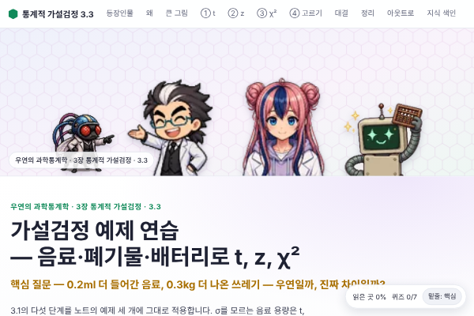
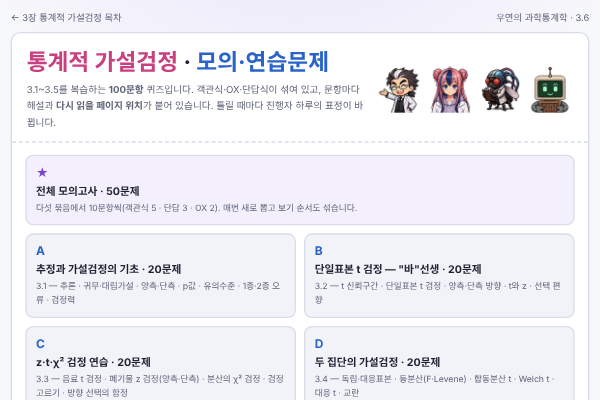

우연의 과학통계학
5장 통계적 가설검정
가설검정의 논리, 모평균·모분산·모비율 검정, 두 집단 비교, 분산분석과 모의고사
3.1통계적 추정과 가설검정우연의 과학통계학 3.1: 추론통계와 기술통계, 추정과 가설검정의 차이, 코로나19 치료제 10명 중 7명 완치 사례, 가설검정 5단계(가설 설정·유의수준·검정통계량·비교·결론), 귀류법, 단측·양측, p값, 1종·…

3.2"바"선생의 모집단 평균 추정우연의 과학통계학 3.2: 오피스텔에서 목격된 바퀴벌레 14마리 길이로 평균의 90·95·99% 신뢰구간을 구하고, 평균 4.5cm 가설을 양측·단측 t검정으로 판정하는 사례

3.3가설검정 예제 연습우연의 과학통계학 3.3: 음료수 평균 용량 t검정, 생활 폐기물량 z검정(양측·단측), 휴대전화 배터리 무게 분산의 카이제곱 검정을 다섯 단계 풀이로 연습

3.4두 집단에 대한 가설검정우연의 과학통계학 3.4: 단일집단과 두 집단의 추정, 독립표본과 대응표본의 구분, 흡연자·비흡연자 폐 손상 수치의 등분산 검정과 독립표본 t검정, 면역 4주 전후 대응표본 t검정을 결과표 읽기로 풀이
3.5분산분석 (ANOVA)우연의 과학통계학 3.5: 분산분석의 뜻(총변동 = 그룹 간 변동 + 그룹 내 변동), t검정을 여러 번 하면 안 되는 이유, 교육 프로그램 세 가지(강의식·실습형·온라인)의 효과를 분산분석표와 사후검정으로 분석

모의고사가설검정 모의고사3.1~3.5를 복습하는 100문항 모의·연습문제 퀴즈 (객관식·OX·단답, 타이머, 오답 리뷰)